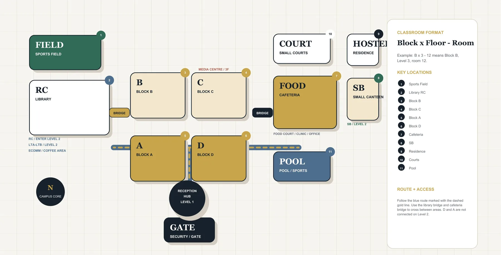
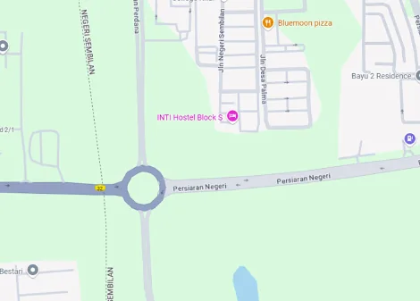
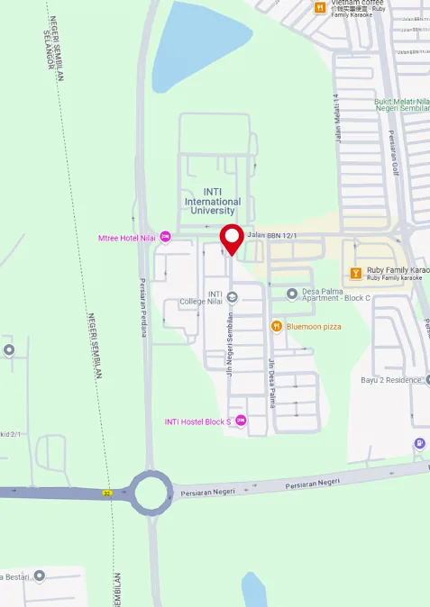

A map and classroom-code system that helps new students move from building to floor to room.
The project reorganises campus locations into a readable visual hierarchy, using consistent codes and routes to connect academic blocks, facilities and sports areas.
Map buildings, routes and facilities.
Create a consistent block-floor-room code.
Test the route logic through practical examples.



A navigation map and decoder that let users find the block, floor and room in one sequence.
The system becomes clearer when map labels and classroom codes share the same hierarchy. Next, test it with students new to campus.